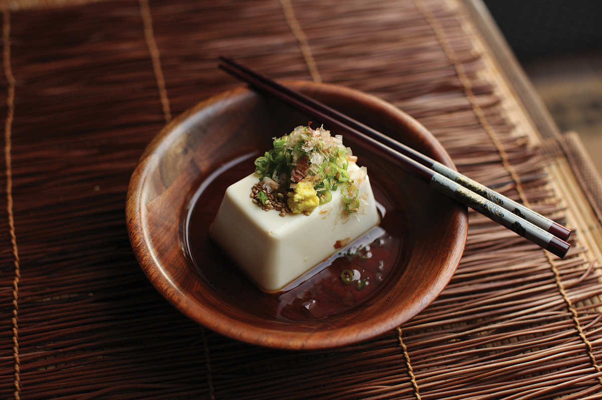
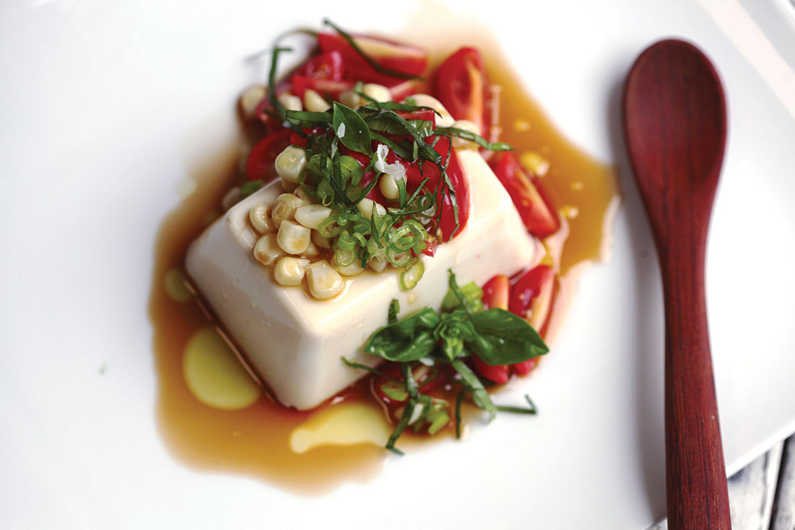
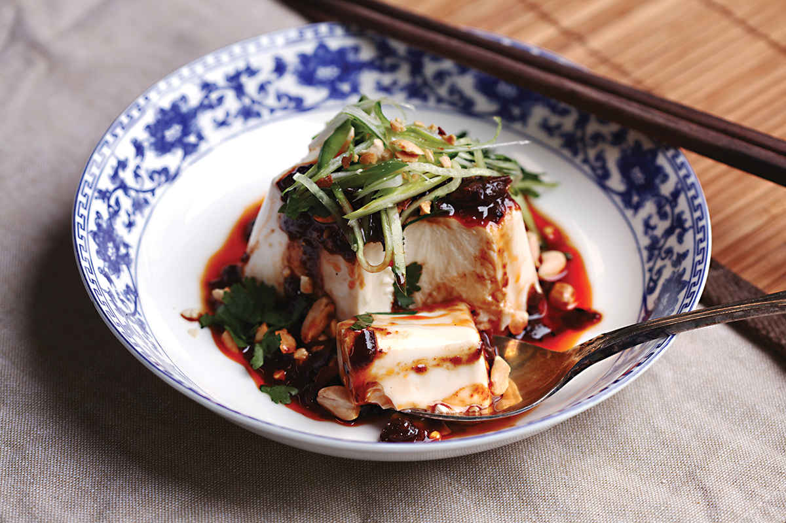

HIYAYAKKO (JAPANESE COLD DRESSED TOFU WITH SOY SAUCE AND GINGER)
|
Yield Serves 4 |
Active Time 5 minutes Total Time 5 minutes |
INGREDIENTS
3 tablespoons (45 ml) homemade dashi (here–21) or Hondashi
1 tablespoon (15 ml) shoyu or light soy sauce
2 teaspoons (10 ml) mirin or ½ teaspoon (2.5 ml) honey or agave syrup
One 12-ounce (340 g) block soft or medium silken tofu
A marble-sized dollop of grated fresh ginger
A big pinch of toasted sesame seeds
1 scallion, very thinly sliced
A big pinch of katsuobushi



Silken tofu is wonderful lightly dressed as a side dish, and it can be served straight from the fridge. Tofu with soy sauce and a sprinkle of katsuobushi was one of my favorite snacks growing up (and my daughter loves it now), and it’s so simple I’m not even going to offer a recipe. Just put the block of tofu on a plate, drizzle it with soy sauce, add a sprinkle of katsuobushi, and serve with a spoon.
If you do feel like dressing it up a bit more, you can start by cutting the soy sauce with a bit of dashi and mirin and from there take it in any number of directions by pairing it with other sauces or fresh seasonal vegetables.
DIRECTIONS
1 In a small bowl, combine the dashi, soy sauce, and mirin.
2 Place the tofu on a serving platter. Drizzle with the dressing. Garnish with the ginger, sesame seeds, scallions, and katsuobushi and serve.
Cold Tofu with Fresh Corn, Tomatoes, Olive Oil, and Basil
Combine 3 tablespoons (45 ml) of dashi, 1 tablespoon (15 ml) of light soy sauce or shoyu, 2 teaspoons (10 ml) of mirin, and 2 tablespoons (30 ml) of extra virgin olive oil in a medium bowl. Add the kernels from 1 ear of fresh corn (or cut off the kernels from some grilled or boiled corn that’s been in the fridge overnight) and 5 ounces (140 g) of cherry tomatoes split in half along with a thinly sliced scallion and a handful of finely chopped fresh basil leaves. Spoon this mixture over a 12-ounce (340 g) block of silken tofu and serve.
Cold Tofu with Fermented Chile-Bean Sauce, Cucumber, and Peanuts
Combine 3 tablespoons (45 ml) of dashi, 1 tablespoon (15 ml) Sichuan doubanjiang, 1 teaspoon (5 ml) light soy sauce or shoyu, and 1 tablespoon (15 ml) vegetable, canola, or light olive oil in a small bowl. Spoon this mixture over a 12-ounce (340 g) block of silken tofu. Garnish with a big pinch each of slivered cucumber, sliced scallion, chopped cilantro, and lightly crushed peanuts and serve.